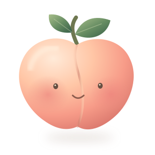

找到盆底肌
想象自己正在忍住排气，感受身体内部轻轻向上提起。腹部、臀部和大腿尽量保持放松。
不要把反复中断排尿当作日常练习。找不到发力位置时，可以请医生或盆底康复治疗师指导。
放慢呼吸，从一次轻轻收紧开始。

一点坚持，悄悄积蓄力量不用着急，今天就是很好的开始。
专注身体的感受，让练习成为日常。
按住蜜桃，轻轻收紧盆底肌
跟随自己的节奏，放松和收紧同样重要。
YOUR LITTLE WINS
在自己的节奏里，慢慢积累。
无需每天完美，
愿意再开始，就值得肯定。
AT YOUR OWN PACE
适合自己的，才是好的练习。
从今天，开始照顾自己
每组 10 次。身体不适时请停止，不必勉强完成目标。
你的练习，只属于你。
记录保存在当前设备的浏览器中，不上传。
清除网站数据或更换设备后不会自动恢复。
凯格尔运动小助手 · 精修版 5.0
START GENTLY
凯格尔训练，是有意识地收紧和放松盆底肌。正确发力，比做得多更重要。
想象自己正在忍住排气，感受身体内部轻轻向上提起。腹部、臀部和大腿尽量保持放松。
不要把反复中断排尿当作日常练习。找不到发力位置时，可以请医生或盆底康复治疗师指导。
屏幕按压只用于跟随节奏，不能检测肌肉是否正确收紧。
不要憋气、夹臀或用腹部代偿。出现疼痛、明显紧绷或排尿不适时，停止练习并咨询专业人士。有盆底疼痛或正在术后恢复时，请先确认适合自己的方案。
练习时长和次数可按专业指导调整；不要为了打卡额外加量。
盆底肌训练可帮助改善尿控，也可能改善部分男性的性功能，效果因人而异。本工具用于节奏引导与记录，不保证硬度、持久力或特定时间内的效果。
A LITTLE BETTER, EVERY DAY
放松一下，让身体记住这份从容。